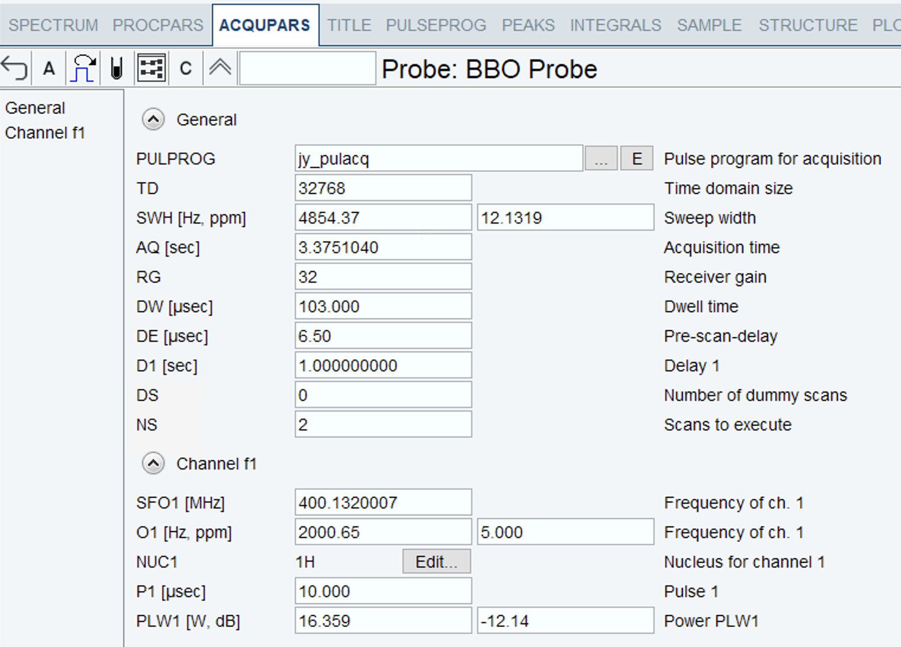

Having written our first pulse programme, we’ll run it on the spectrometer! We’re going to assume that you already have a sample in the spectrometer prior to running any of these commands.
Obviously, this section can only really be done on a spectrometer terminal; you can’t run an experiment with the ‘processing-only’ version of TopSpin on your laptop.
(This is part 3 of a series of posts on pulse programming in TopSpin. For the other parts, see the table of contents here.)
The pulse programme
As a reminder, here is the pulse programme which we had in the previous post, which is the starting point for this post. (You will presumably have replaced my name with yours!)
; jy_pulacq
; pulse-acquire sequence
; Jonathan Yong, 4 July 2021
#include <Avance.incl>
zd
1 d1
(p1 ph1):f1
go=1 ph31
wr #0
exit
ph1 = 0 2
ph31 = 0 2We mentioned previously that the first three lines are comments; this is indicated by the semicolon ; at the start of each line. Comments can also be added at the end of existing lines. You can write something like:
ph1 = 0 2 ; phase cycle for pulseAt this point, you may want to add a few comments to the main part of the pulse programme to remind yourself of what each line represents.
Creating a new experiment
First, we need to get some of the basic spectrometer configuration set up properly. For example, we need to make sure that the spectrometer is expecting a 1D experiment, and we need to also make sure that the f1 channel actually refers to 1H. Although all of this can be configured from scratch, the easiest way to do this by far is to read in an existing parameter set.
At the TopSpin command line, type new. This (unsurprisingly) brings up a window where you can set up a new experiment.
- In the Read parameter set line, click the Select button, which should bring up a list of parameter sets. Look for one that already corresponds to a 1D proton experiment: chances are somebody before you has already set one up on the spectrometer.1
- Make sure to tick the Execute getprosol button.
- For all other settings, choose something sensible.
- Then hit OK until your new experiment has been created.
edc window on a 400 MHz spectrometer.Changing acquisition parameters
Right now, the parameter set will have loaded one of the standard Bruker pulse programmes. Let’s first change this to use our own pulse programme.
- Type
edain the TopSpin command line, or hit the AcquPars tab at the top. You will find thePULPROGparameter at the very top of this screen. - Either change this manually to the name of the pulse programme (
jy_pulacqin my example above); or select it using the buttons to the right. (See box below.) Note that the name of the pulse programme refers to the filename, not whatever you put in the header comments!
eda window on a 400 MHz spectrometer.- After that, click on the NMR-tube-like button on the top bar (also highlighted above), or equivalently, type
asedin the TopSpin command line. This brings us to a second screen where you can change pulse sequence parameters, such as the delayd1and pulsep1which we requested.

ased window on a 400 MHz spectrometer.The parameters of interest
{% include note.html content=” Before proceeding, take a close look at the units for the different parameters in the ased screen. Delays are specified in seconds, whereas pulses are in microseconds. Mixing these up is a common source of errors! “%}
Out of all these parameters, the only two that we actually specified in our pulse programme were D1 and P1.2
For D1, anything on the order of 1 second will work fine for a standard proton experiment, but you can really set this to be anything you like (for this experiment, at least).
For P1, we aren’t actually interested in a specific duration. What we should really aim for is a 90° flip angle, so that we tip the magnetisation from \(+z\) to \(-y\) or \(+y\) (since our pulse is applied either along \(+x\) or \(-x\).) You might recall from your general NMR reading that the flip angle \(\beta\) is given by
\[\beta = \omega_1 t_\mathrm{p}\]
where \(\omega_1\) is the radiofrequency (RF) amplitude of the pulse (in Hz), and \(t_\mathrm{p}\) is the pulse width (in units of time). This equation means that there are actually many different combinations of \(\omega_1\) and \(t_\mathrm{p}\) which yield a 90° flip angle: if \(\omega_1\) is a bit larger, than \(t_\mathrm{p}\) just needs to be a bit smaller.
We can set the pulse width \(t_\mathrm{p}\) using the P1 parameter, but what about \(\omega_1\)? It turns out that you can’t input \(\omega_1\) directly in Hz, but you can do it indirectly via the PLW1 parameter, which is given in the mysterious units of W or dB. However, we are spared from actually having to figure out what this means, because whenever you run getprosol (or select it from the new dialog box), both of these values P1 and PLW1 will be set for you such that P1 roughly corresponds to a 90° pulse.3 These values are spectrometer-dependent, so do not copy the values in the screenshot above!
Finally, to make our experiment go a bit quicker, let’s set DS=0 and NS=2. NS just refers to the number of scans. DS refers to dummy scans, which are scans that are executed before the experiment starts but without saving any data. We’ll have more to say about dummy scans later.
Running it
Now, you can run the following commands (you should have been taught all of these when being trained on the spectrometers; please consult somebody if you are not sure what you are doing):
- lock:
lock <solvent> - shim: the default command is
topshim, but often some extra options will have been added to improve performance. Consult your institution’s manual, or somebody in charge. - tune and match:
atma(automated) oratmm(manual) - adjust receiver gain:
rga
Before running it, you can use the expt command to get an estimate of how long your experiment will take. With the parameters above, it should be somewhere between 5 and 10 seconds.
Finally, run the experiment with zg. When it’s done, process using efp and apbk. You should get a recognisable 1H spectrum of your compound:
As an exercise, modify your pulse programme such that the ph31 phase cycle is \((x, x)\) (i.e. ph31 = 0 0), then re-run the experiment. What do you expect would happen? Does the result match your prediction?
Numbers by convention
In general, when we were writing our pulse programme, we could have chosen any number from p0 to p31. However, we also saw that when running getprosol, the value of p1 was conveniently set to a 90° pulse. This would not have happened if we had used any other number: we would have to set the value ourselves, without the help of getprosol.
Although the number can be arbitrarily chosen, some numbers have “special” meanings by convention. For example, p1 refers to a proton 90° pulse, and p2 to a proton 180° pulse; p3 refers to a carbon 90° pulse. Some of the higher numbers also have special meanings when used in the context of shaped pulses. All of these will be covered in a later section.
For delays, there are fewer ‘reserved-by-convention’ values. The main ones are d0 which is nearly always the incremented delay in 2D experiments, and d1 which is the recovery delay. Neither of these are affected by getprosol, so you could definitely go against this convention without affecting usability, but it would make your pulse programme harder for other people to read.
Footnotes
Notice that there is a dropdown box at the top-right, which should contain paths like
.../par/userand.../par. These have the same meaning to theppdirectories which we’ve been using: thepar/userdirectory is meant for user-defined parameter sets, whereas thepardirectory is meant for pre-installed parameter sets. If you cannot find anything sensible at all in thepar/userdirectory (highly unlikely!), then you should be able to use thePROTONparameter set in thepardirectory.↩︎For all of these parameters, you can find more detailed explanation in the TopSpin documentation: type
docsin the command-line and select Acquisition Commands and Parameters.↩︎Of course, these values aren’t magically conjured from nothing. When the spectrometer was installed, somebody will have performed a careful pulse calibration to figure out a pair of appropriate values, so that you didn’t have to do it yourself. They would then have saved it, so that you could access it via
getprosol.↩︎